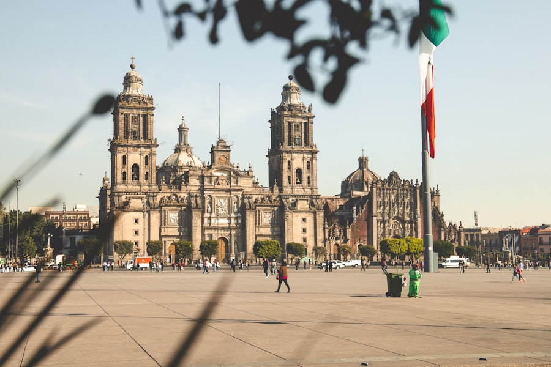

Coffee entered México by sea, in the late years of the eighteenth century, landing near the port of Veracruz. The hills around Córdoba gave it a first home, and for decades that was the country's coffee heartland — humid, green, Atlantic.
But the chapter Mexicans love to tell happened a century later, in the south. The story goes that coffee crossed into Chiapas from Guatemala — seeds carried quietly over the border, contraband of the most fragrant kind. What the smugglers could not have known is what the land would do with it: the volcanic soils of the Soconusco, rich in minerals, raised a coffee that would become legendary.
La revolución en una olla de barro
Then came the Revolution — and with it, café de olla. Brewed in a clay pot with canela and piloncillo, it is remembered as the coffee of las adelitas, the women who marched with the armies and kept them fed, warm and fighting. The clay gives it a taste no machine can copy; Mexicans call it simply sabor de barro, the flavor of the pot itself.
Today México's coffee grows mostly in the south — Chiapas, Veracruz, Oaxaca — much of it in the hands of smallholder and indigenous communities, under the shade of taller trees, the old way.

La taza — Café de olla
Café de olla is still made the same way: the clay pot, the cinnamon stick, the dark cone of piloncillo dissolving slowly. It arrives with pan dulce, and it stretches the meal into sobremesa — that untranslatable hour when the food is finished but nobody leaves the table.
If your family is Mexican, you may not know the history. But you know the smell. That was the point of it all along.
- Arrived
- ~1780s–90s, by way of Veracruz
- Regions
- Chiapas, Veracruz, Oaxaca
- The cup
- Café de olla — clay pot, canela, piloncillo
- Word to know
- «Sobremesa» — the hour after the meal
